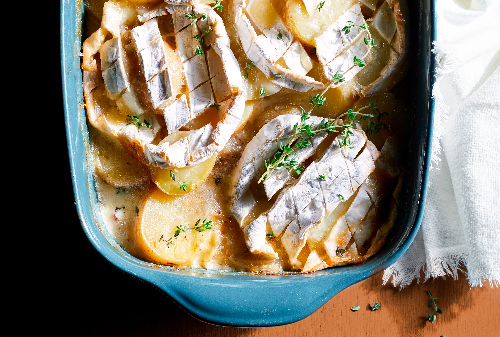

TARTIFLETTE

Description
Tartiflette is a rich and indulgent French dish that hails from the Savoie region in the French Alps. Traditionally, it is made with potatoes, reblochon cheese, bacon lardons, onions, and a touch of white wine, creating a creamy, comforting meal perfect for colder months. The dish's origins are relatively modern, having been popularized in the 1980s by the French cheese industry to promote reblochon, a soft, cow's milk cheese with a smooth, creamy texture and a mild, slightly nutty flavor. Tartiflette is often served as a hearty main course, particularly in ski resorts, where its warmth and richness provide a satisfying end to a day on the slopes.
The preparation of tartiflette is relatively straightforward, with the key steps involving layering sliced potatoes, sautéed onions, and lardons in a baking dish, then topping it all with generous slices of reblochon. The dish is baked until golden and bubbling, with the cheese melting into the potatoes to form a luxurious, gooey texture. Tartiflette is the perfect dish for a casual family meal or a festive gathering, offering a taste of the French Alps’ rustic, yet refined, culinary traditions. Its combination of flavors—creamy, savory, and slightly smoky—makes it a beloved comfort food that's enjoyed far beyond its regional roots.
INGREDIENTS
- POTATOES About 1 to 1.5 kg (around 2 to 3 pounds) of waxy potatoes, like Yukon Gold or Charlotte, are preferred for their ability to hold their shape when cooked.
- REBLOCHON CHEESE1 large wheel (around 450-500g or 1 lb), which is the signature cheese for tartiflette. It has a creamy texture and mild, slightly nutty flavor.
- BACON LARDONS Around 150g (5 oz), or diced bacon, for the smoky and savory element
- ONIONS2 medium onions, thinly sliced, which add sweetness and depth of flavor.
- GARLIC1-2 cloves, minced or crushed.
- WHITE WINEAbout 100 ml (1/2 cup), typically dry white wine like Sauvignon Blanc or Chardonnay.
- BUTTER1-2 tablespoons for sautéing.
- HEAVY CREAM Around 100 ml (1/2 cup), for a richer texture.
- SALT, PEPPER
- OLIVE OIL
- Preheat the Oven: Preheat your oven to 180°C (350°F).
- repare the Potatoes: Peel the potatoes and slice them into thin rounds (about 3–5 mm thick). Place them in a large pot of salted water and bring to a boil. Cook for about 10-15 minutes until just tender, but still firm. Drain and set aside.
- Cook the Lardons and Onions: In a large skillet, heat a tablespoon of butter (or olive oil) over medium heat. Add the lardons (bacon pieces) and cook until they become crispy and golden. Add the sliced onions and cook for another 5–7 minutes until softened and lightly caramelized. Add the minced garlic and cook for another 1 minute. Stir in the white wine and cook for 2–3 minutes until the wine has reduced slightly. Remove from heat.
- Assemble the Dish: In a buttered baking dish, layer half of the cooked potato slices at the bottom. Season with salt and pepper. Top with half of the lardon-onion mixture. Repeat the layers with the remaining potatoes and lardons.
- Add the Cheese and Cream: Slice the reblochon cheese into thick pieces and place them on top of the layered potatoes and lardons. Pour the heavy cream over the top, ensuring the ingredients are evenly covered.
- Bake: Place the baking dish in the oven and bake for 25-30 minutes, or until the cheese is melted, bubbly, and golden brown on top.
- Serve: Remove from the oven and let the tartiflette cool for a few minutes before serving. Enjoy with a green salad and some crusty bread for the perfect meal!